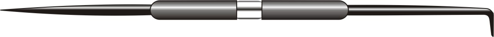
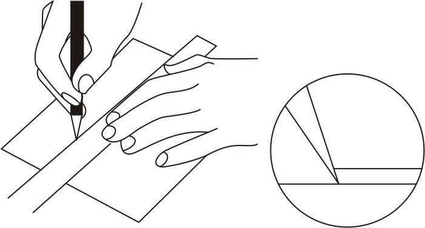
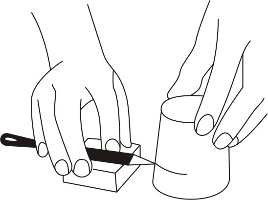

The scriber is designed to serve one in workshop in the same way a pen serves one in writing in the class room. In general, it is used to scribe or mark lines on metal surfaces, and has two needle pointed ends. Scribers have a scriber point made of tempered high grade tool steel and a handle of steel tubing which may be nickel plated. The point is reversible telescoping into the knurled handle when not in use. Bent point scribers are usually 300 mm long with one straight point and one long or one short bent point bent at a 90 degrees angle for reaching and marking through holes. Some of these scribers are threaded and can be engaged in either end of the handle.

Figure 1: Scriber
Figure 2: Using a scriberTo mark a line parallel to a surface, Pile up blocks of wood or metal to position the scriber at the required height when it is laid flat on top. Small adjustments can be made by adding strips of cardboard or sheet metal. Place the workpiece on the surface aligning the mark with the point on the scriber. Hold the scriber firmly in place with one hand and rotate the object against the point to mark a line.

Figure 3: Using scriber to mark a line parallel.If the head of the punch becomes mushroomed after extended use, grind to original shape on a grinder wheel. Restore temper after grinding.
If the point or the flat end of a punch is ground beyond the hardened section, if the mushroomed head was reshaped or if the punch was overheated in grinding, the punch must be hardened and tempered.
| ← Tutorial 14 | Tutorial 16 → |